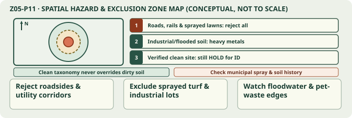

Z05-P11 · Wild foods and poisonous lookalikes · New manuscript
Site Contamination Exclusions: Roadsides, Sprays and Floodplains
Exclude chemically contaminated sites even when a species is familiar, preventing herbicide, lead, and pathogen ingestion.
When it applies · Evaluating site cleanliness across urban, suburban, agricultural, and trailside locations.
Equipment · Site history review, local water/spray notices.

Actions
- Exclude all road shoulders, highway ditches, railroad rights-of-way, utility corridors, manicured lawns, golf courses, and agricultural field edges where herbicides, road salts, and brake/exhaust heavy metals accumulate.[B19, R12]
- Exclude urban lots near pre-1978 structures, former industrial sites, mine tailings, and floodplains carrying sewage or industrial sediment—fungi and wetland roots concentrate heavy metals like lead, cadmium, and arsenic.[B19, R12]
- Exclude low trailside vegetation heavily soiled by domestic pet waste or wild-animal feces carrying parasite eggs.[B19, H16]
Failure recognition · Collecting familiar greens or mushrooms from a sprayed ditch or urban lot causes chemical or heavy-metal poisoning despite correct taxonomy.[B19, R12]
Verify · Site-history screening rules out sprays, traffic runoff, industrial soil, and floodwater before any specimen assessment.[B19, R12]
Stop or change course · Stop immediately and reject any specimen growing near roads, railways, sprayed yards, industrial sites, or polluted water.[B19, R12]
Evidence and editorial notes
- B19 · Minnesota DNR · Terrestrial Invasive Plants and Toxic Lookalikes (Current web edition)
- Section: Terrestrial invasive species and roadside contamination hazards · Conditions: Disturbed corridors, edges, and utility rights-of-way
Support: Roadsides and invasive-dominated corridors are frequently sprayed with herbicides and accumulate runoff metals and road salts.
Limitations: Never collect food plants from roadsides, industrial lots, sprayed corridors, or contaminated floodplains even if species identity is certain. · Conflicting evidence: None noted.
Editorial note: Separates species ID from site-contamination safety. · Specialist reviewer: Environmental health and botanist
Primary source · checked 2026-11-25 - H16 · Minnesota DNR · Mammals of Minnesota Species and Sign Reference (Current web edition)
- Section: Mammal ecology, seasonal movement, and sign interpretation · Conditions: Reading wildlife tracks, scat, browse, and trail patterns
Support: Substrate moisture, snow crust, and animal gait distort track dimensions; combine multiple signs and habitat context rather than single prints.
Limitations: Never handle unknown scat barehanded due to parasite eggs (e.g., Baylisascaris); sign interpretation is ecological observation, not harvest authorization. · Conflicting evidence: None noted.
Editorial note: Grounds Z06 tracking in ecology and hygiene. · Specialist reviewer: Wildlife ecologist
Primary source · checked 2026-11-25 - R12 · U.S. EPA · Protect Your Family from Lead in Soil and Dust (2025)
- Section: Soil contamination and urban/industrial lead hazards · Conditions: Soils near historic structures, roadways, mines, or industrial sites
Support: Soils and clays near older painted structures, smelters, tailings, or roadways may harbor lead or industrial contaminants.
Limitations: Visual texture or color cannot detect lead, arsenic, or chemical contaminants; do not use unverified soil/clay for cookware or food contact. · Conflicting evidence: None noted.
Editorial note: Separates clay plasticity checks from chemical safety. · Specialist reviewer: Environmental health and soil scientist
Primary source · checked 2026-11-25
Source lineage · New manuscript (Z05 P19-C environmental contamination) · Classification · New manuscript.